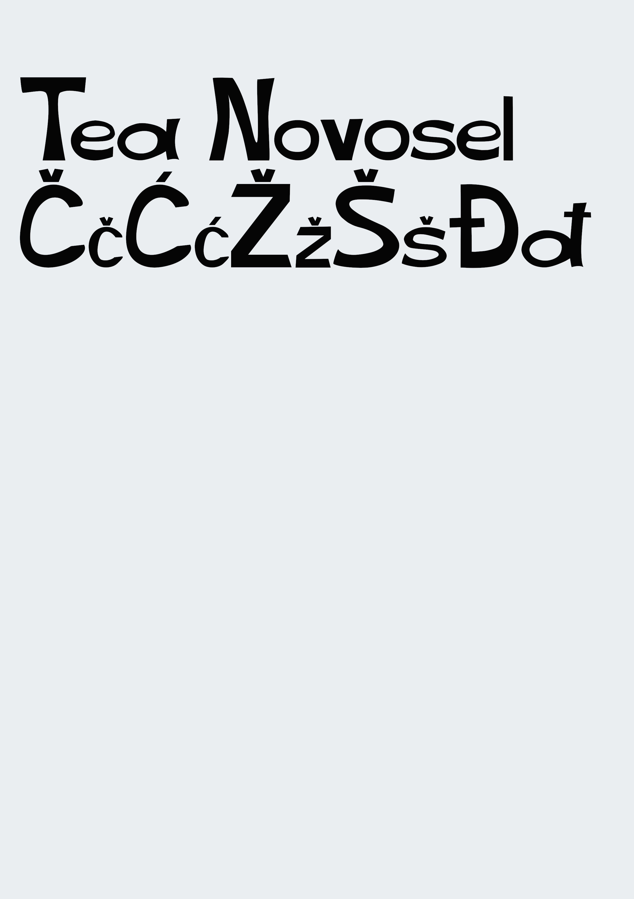
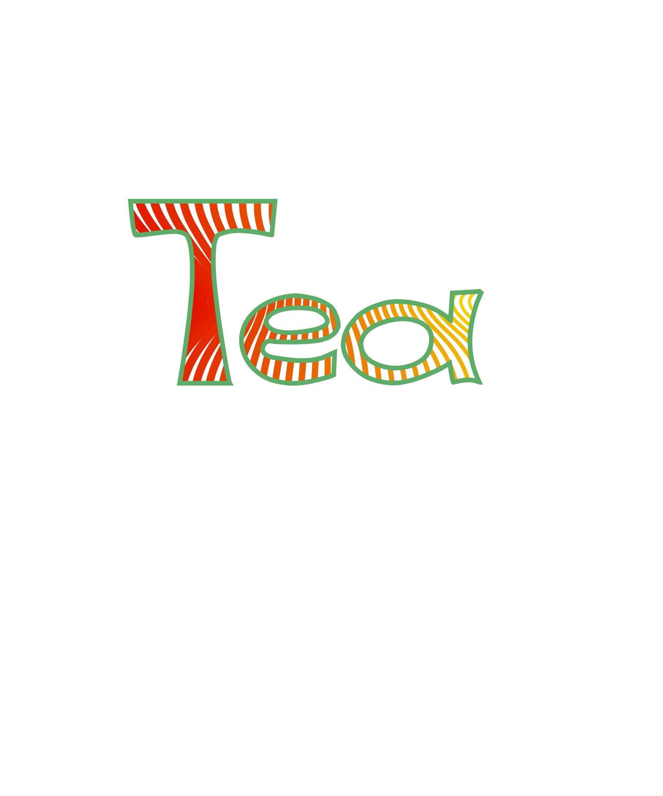
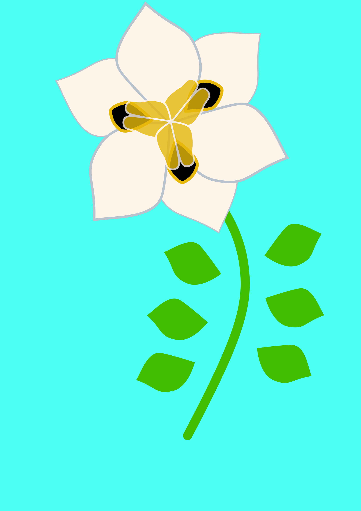
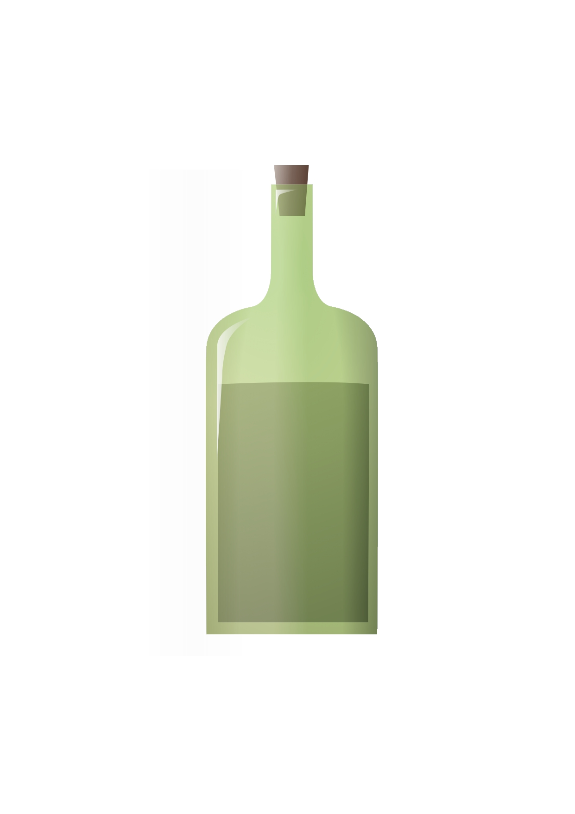
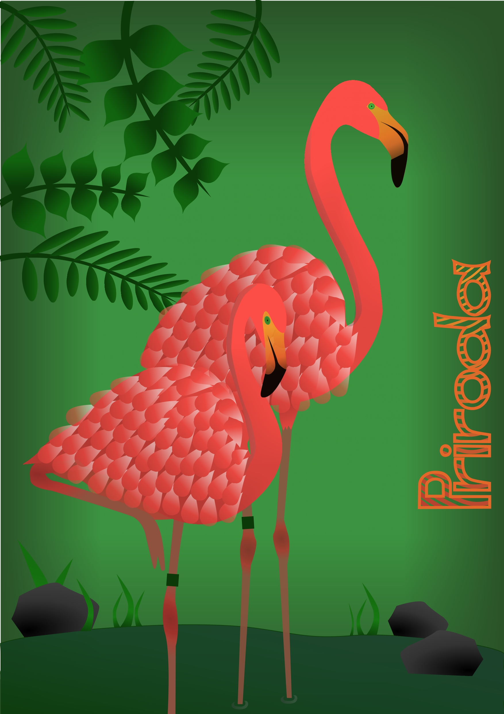
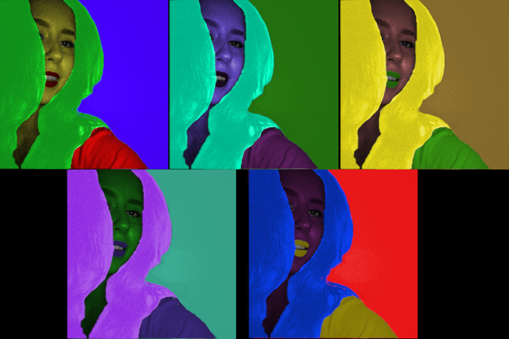
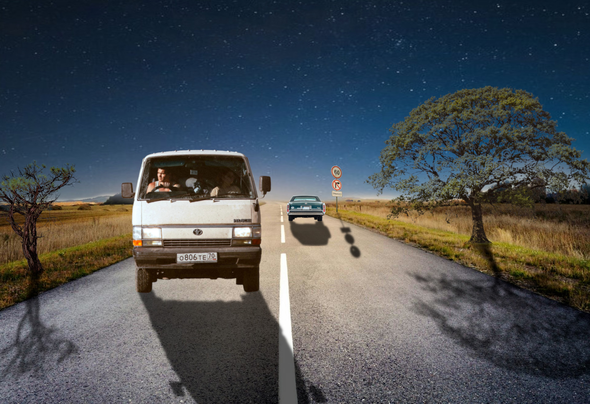
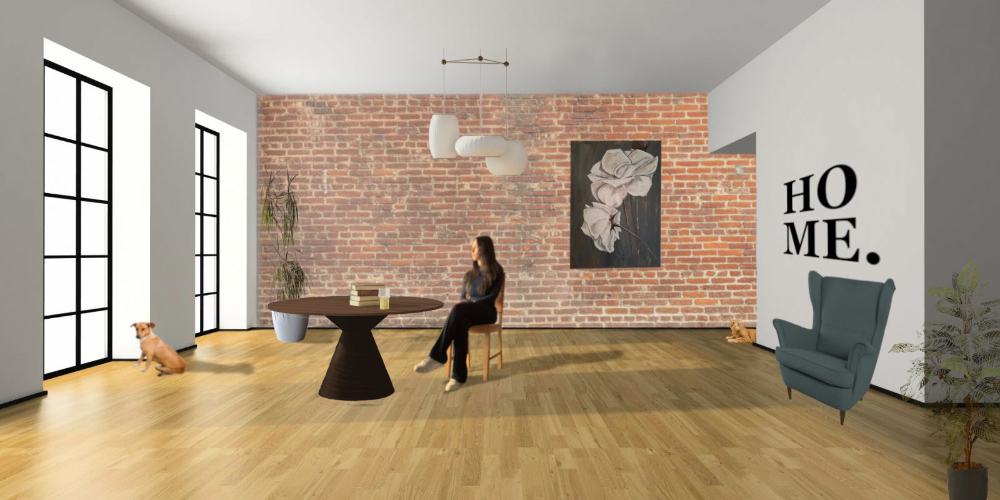

Vektorska grafika
Vježba 1: Font
U ovoj sam vježbi izradila vlastiti font.
Vježba 2: Bezierova krivulja, precizno crtanje
Izrada vlastitog dizajna s krivuljama pomoću Blend alata.
Vježba 3: Boja, transformacije
Izrada uzorka korištenjem rotacije, scale, multipliciranjem oblika te transparencije.
Vježba 4: Gradijenti, transparencija
Izrada složenih objekata pomoću tehnika spajanja i izrezivanja te primjene različitih vrsta gradijenata i transparencije.
Projektni zadatak 1
Piksel grafika
Vježba 5: Retuširanje
Korekcija slike tehnikama digitalnog retuširanja fotografija za postizanje realističnog efekta.

Vježba 6: Koloriranje
Koloriranje fotografija sa različitim postavkama kolorizacije.
Vježba 7: Fotomontaža
Kombiniranje više fotografija izrezivanjem dijelova različitih slika i spajanjem u jednu cjelinu.
Projektni zadatak 2
Video/web
Vježba 8: Cinemagraf
Obrada videa kao kinemagraf čija je karakteristika spajanje statične i pokretne slike.

Vježba 9: Video obrada
Rezanje i spajanje više video isječaka iz više izvora te brisanje zvuka i dodavanje efekata i teksta.
Vježba 10 i 11: Web stranica u HTML-u i postavljanje na Github
Stvaranje vlastite web adrese.
Moja web stranica